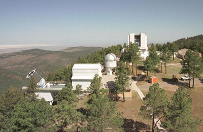

|
The Science of SDSS |
Apache Point Observatory |
Telescope Details
Tour the SDSS Site | Data Processing Challenges | FAQ |
Move your mouse over the image below to tour Apache Point Observatory.
|  |
This photo shows the Sloan Digital Sky Survey observing site at Apache Point Observatory in the Sacramento Mountains of New Mexico. The site is about 9150 feet above sea level. The combination of height and distance from civilization makes for dark nights with clean air and great seeing.